| Integrante | Número de estudiante |
|---|---|
| Sebastian Akerman | 282163 |
| Felipe Kelmanzon | 282212 |
El proyecto LOST utiliza el ambiente MountainCarContinuous-v0 de Gymnasium. Un auto (nuestro rover) se encuentra en un valle entre dos colinas y debe llegar a la bandera ubicada en la cima de la colina derecha. El motor del auto no es lo suficientemente fuerte para subir directamente, por lo que el agente debe aprender a generar impulso, retrocediendo y avanzando alternadamente.
| Elemento | Descripción |
|---|---|
| Espacio de observación | Box(2,): posición x ∈ [-1.2, 0.6], velocidad v ∈ [-0.07, 0.07] |
| Espacio de acciones | Box(1,): fuerza continua a ∈ [-1.0, 1.0] |
| Recompensa por paso | r = -0.1·a² (penaliza el uso de fuerza) |
| Recompensa por meta | +100 al alcanzar x ≥ 0.45 |
| Fin de episodio | terminated=True (éxito, llegó a la meta) o truncated=True (máx. 999 pasos) |
El desafío central de este ambiente es que la recompensa es esparsa y mayormente negativa: mientras el agente no alcance la meta, todo lo que recibe son penalizaciones por usar fuerza. Esto puede inducir a un agente mal inicializado a aprender que "no moverse" (a ≈ 0) es la política óptima, quedando atrapado en un mínimo local — problema que se analiza en profundidad en la Sección 4.
Dado que Q-Learning tabular requiere un espacio de estados y acciones discreto y finito, se implementó la
clase Discretizer (utils/discretization.py), que:
np.linspace para posición (n_pos_bins) y velocidad (n_vel_bins) dentro de sus rangos válidos.(x, v) en un índice de estado discreto (x_bin, vel_bin) mediante np.digitize.n_actions valores de fuerza uniformemente distribuidos en [-1, 1], y mapea el índice de acción discreto elegido por la política a la acción continua que espera env.step().Se exploraron seis configuraciones de discretización, entrenando 5.000 episodios con los mismos hiperparámetros de aprendizaje (α=0.2, γ=0.99, ε₀=1.0, decay=0.9995, ε_min=0.05, q_init=1.0):
| Configuración | Bins (pos × vel) | N° acciones | Espacio de estados | Reward medio | Tasa de éxito |
|---|---|---|---|---|---|
| 10×10 / 5 acc. | 10×10 | 5 | 605 | 74.8 | 86% |
| 10×10 / 10 acc. | 10×10 | 10 | 1.210 | 60.3 | 83% |
| 20×20 / 10 acc. | 20×20 | 10 | 4.410 | 91.7 | 100% |
| 20×20 / 15 acc. | 20×20 | 15 | 6.615 | 83.1 | 93% |
| 30×30 / 15 acc. | 30×30 | 15 | 14.415 | 93.5 | 100% |
| 30×30 / 20 acc. | 30×30 | 20 | 19.220 | 94.2 | 100% |
Los valores reportados corresponden a la evaluación (100 episodios, política greedy) de los modelos entrenados entregados. El patrón es claro: las configuraciones 30×30 alcanzan el mejor desempeño (93-94 reward, 100% éxito), mientras que 10×10 sufren aliasing (estados físicamente distintos colapsan al mismo bin) y caen a 60-75 reward. El espacio de estados crece como O(bins²×acciones), pero la representación útil crece más lento porque muchos estados nunca se visitan. Las diferencias entre configuraciones intermedias reflejan además la varianza propia de entrenar cada modelo una única vez. Elección final: 30×30 bins, 15 acciones — mejor balance reward/tamaño; 30×30 con 20 acciones no mejora de forma apreciable (94.2 vs 93.5) y agranda el espacio.
Se implementó QLearningAgent (q_learning_agent.py), un agente Q-Learning tabular
con tabla Q de forma (n_pos_bins+1, n_vel_bins+1, n_actions) y política
ε-greedy. La regla de actualización (Sutton & Barto, ec. 6.8) es:
La exploración se controla con ε-greedy: con probabilidad ε se elige una acción aleatoria, y con
probabilidad 1-ε la acción de mayor valor Q. ε decae multiplicativamente cada episodio
(epsilon ← max(epsilon_min, epsilon · decay)), permitiendo que el agente explore mucho al
inicio y explote su política aprendida hacia el final.
Un parámetro adicional, q_init, controla el valor inicial de toda la tabla Q. Como se detalla
en la Sección 4, la inicialización optimista (q_init=1.0) resultó ser crítica para que el
agente no quede atrapado en la política trivial "fuerza = 0".
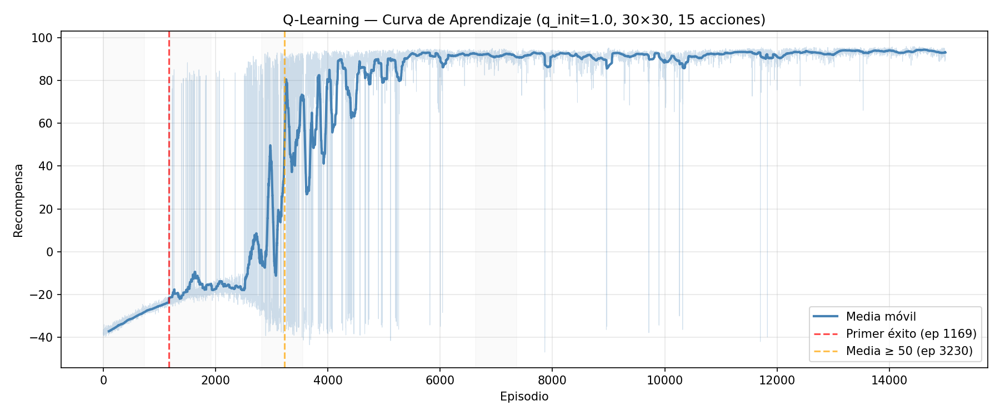
Sobre la configuración 30×30 bins / 15 acciones / q_init=1.0, se realizó una búsqueda sistemática de
α (tasa de aprendizaje), γ (factor de descuento) y la velocidad de decaimiento de ε. Cada configuración se
evaluó con test_agent (política greedy pura, ε=0) tras el entrenamiento.
| α | Reward medio | Tasa de éxito | Observación |
|---|---|---|---|
| 0.05 | 61.2 | 66% | Aprende demasiado lento; no converge en el presupuesto de episodios |
| 0.10 | 92.9 | 100% | Buen desempeño |
| 0.20 | 93.9 | 100% | Óptimo |
| 0.30 | -36.5 | 0% | La Q-table diverge: actualizaciones demasiado agresivas desestabilizan los valores aprendidos |
| 0.50 | 84.9 | 96% | Inestable, oscila |
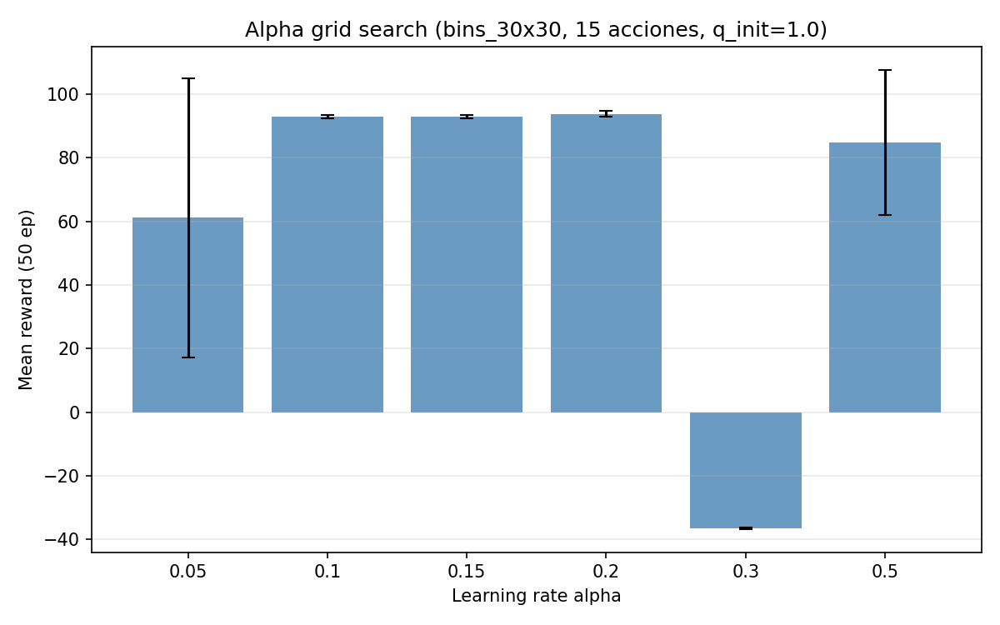
Este hiperparámetro produjo el hallazgo más relevante del proyecto LOST. La meta se alcanza, en promedio,
a unos 500 pasos del inicio del episodio. La señal de recompensa +100 debe propagarse hacia
atrás, descontada por γ elevado a la distancia en pasos:
| γ | Tasa de éxito | Reward medio | Explicación |
|---|---|---|---|
| 0.90 | 0% | 0.00 | 0.9⁵⁰⁰ ≈ 10⁻²³ → la recompensa de la meta es matemáticamente invisible para el TD-update |
| 0.95 | 0% | 0.00 | 0.95⁵⁰⁰ ≈ 5.15×10⁻¹² → igualmente invisible |
| 0.99 | 100% | 93.90 | Óptimo: 0.99⁵⁰⁰ ≈ 0.0066, suficiente para propagar la señal |
| 0.999 | 94% | 88.22 | Sobreestima estados remotos, ligera degradación |
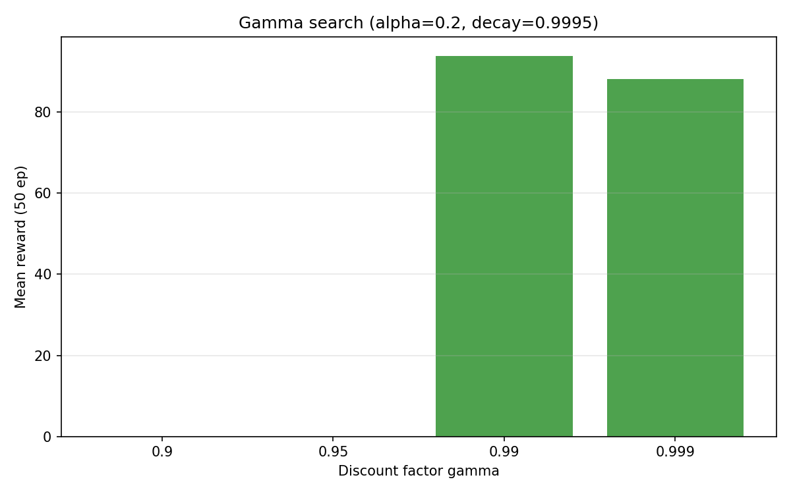
| Decay | ε final (15k eps) | Reward medio | Tasa de éxito |
|---|---|---|---|
| 0.9990 | 0.050 | 91.81 | 100% |
| 0.9995 | 0.082 | 94.74 | 100% |
| 0.9997 | 0.223 | 87.60 | 98% |
| 0.9999 | 0.607 | 74.58 | 84% |
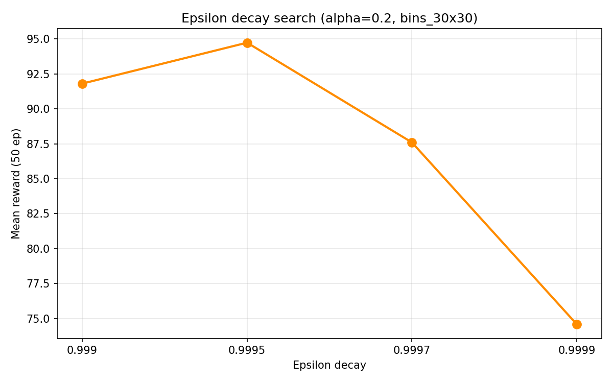
| Parámetro | Valor | Justificación |
|---|---|---|
| Bins (pos × vel) | 30 × 30 | Mejor representación del estado continuo sin explosión del espacio |
| N° acciones | 15 | Precisión suficiente; 20 no aporta mejora |
| α | 0.2 | Máximo reward sin divergencia |
| γ | 0.99 | Necesario para que la meta sea "visible" a ~500 pasos |
| ε₀ / decay / ε_min | 1.0 / 0.9995 / 0.05 | Balance exploración/explotación |
| q_init | 1.0 | Inicialización optimista — evita la política trivial "fuerza=0" (ver Sección 4) |
Siguiendo los capítulos 8.1 y 8.2 de Reinforcement Learning: An Introduction (Sutton & Barto),
se implementó DynaQAgent (dyna_q_agent.py), que extiende Q-Learning integrando
actuación, aprendizaje y planificación. Por cada paso real (s, a, r, s'):
Model(s,a) ← (r, s') (modelo determinista, tabular).n veces los siguientes pasos:
(s̃, ã) visitado anteriormente.(r̃, s̃') del modelo.
Con n=0, Dyna-Q se reduce exactamente a Q-Learning puro. El parámetro n_planning_steps
controla cuánta "experiencia simulada" extra se reutiliza por cada paso real, acelerando la propagación de
información hacia atrás sin necesidad de más interacción con el ambiente.
Se entrenaron 6 configuraciones (n ∈ {0,1,5,10,20,50}) con los mismos hiperparámetros
(20×20 bins, 15 acciones, α=0.2, γ=0.99, decay=0.9995, q_init=0, 3.000 episodios) mediante
scripts/experiment_dyna_planning.py:
| n_planning | Reward medio | Tasa de éxito | 1er éxito | Tiempo de entrenamiento |
|---|---|---|---|---|
| 0 (= Q-Learning puro) | 0.00 | 0% | ep 17 (no converge) | 59 s |
| 1 | 0.00 | 0% | nunca | 69 s |
| 5 | 0.00 | 0% | nunca | 101 s |
| 10 | 39.97 | 66% | ep 51 | 120 s |
| 20 | -28.94 | 18% | ep 47 | 199 s |
| 50 | 0.00 | 0% | nunca | 420 s |
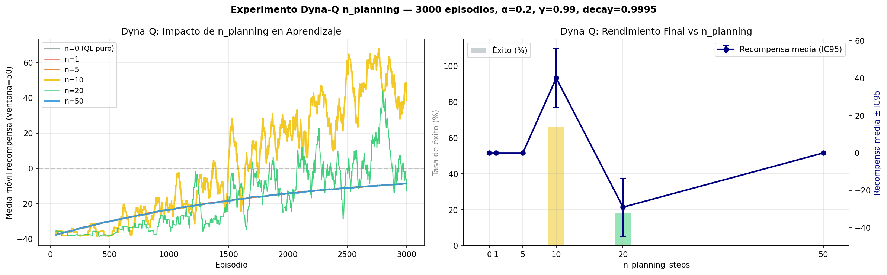
Nos llamó la atención que más planificación no siempre ayude. Con n<10 el modelo aprendido es demasiado pobre y la planificación no alcanza a propagar el valor de la meta. Con n=10 se logra el balance óptimo (66% de éxito a 3.000 episodios, 100% al extender a 5.000). Con n=20, el agente refuerza valores Q incorrectos sobre un modelo todavía escaso, generando una política subóptima de la que cuesta escapar (caída a 18%). Con n=50, cada episodio es ~7× más lento y el modelo sigue siendo insuficientemente denso (0%). El n óptimo depende del presupuesto de episodios reales y de cuán denso esté el modelo aprendido en ese punto del entrenamiento.
Este barrido inicial se hizo con q_init=0 y una sola semilla. Al re-validarlo con q_init=1.0 y 3
semillas, el resultado se confirma y se estabiliza: n=10 alcanza 100% de éxito en las 3
semillas (n=1 también funciona, 99%), mientras que n=50 colapsa a 0% en todas —
demasiada planificación sobre un modelo escaso desestabiliza. Se mantiene n=10 como el valor robusto del
modelo final. Datos en models/lost/dyna_planning_multiseed.csv.
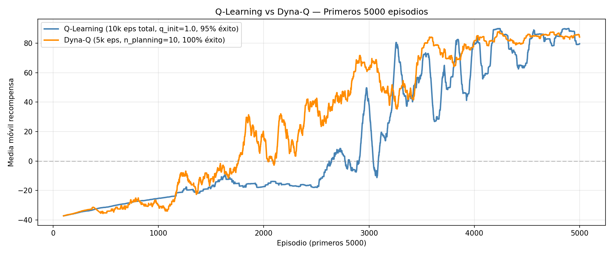
Evaluación con 100 episodios (política greedy, ε=0) sobre los modelos finales entrenados:
| Modelo | Configuración | Reward medio | Std | IC 95% | Éxito | Tiempo de entrenamiento |
|---|---|---|---|---|---|---|
| Q-Learning FINAL | 30×30 bins, 15 acc., 15.000 eps, q_init=1.0, α=0.2, γ=0.99, decay=0.9995 | 94.14 | 0.63 | ±0.12 | 100% | ~5 min |
| Dyna-Q FINAL | 20×20 bins, 15 acc., n_planning=10, 5.000 eps, q_init=1.0 (semilla fija), α=0.2, γ=0.99, decay=0.9995 | 91.9 | 1.5 | ±0.3 | 100% | ~4 min |
| Q-Learning multi-seed (3 seeds) | ídem Q-Learning FINAL, seeds 0/1/2 | 93.02 | 0.97 (entre seeds) | — | 100% | ~5 min/seed |
Modelos entregados: models/lost/qlearning_FINAL.pkl y models/lost/dynaq_FINAL.pkl.
Conclusiones:
El proyecto MATE utiliza un simulador del juego de mesa Isolation sobre un tablero de
4×4 (Board en board.py, expuesto vía IsolationEnv).
Dos jugadores ocupan celdas distintas y se mueven alternadamente. En cada turno, un jugador:
Una acción es entonces el par (dirección, celda_a_destruir). Un jugador pierde
cuando, en su turno, no tiene ningún movimiento válido disponible. El factor de ramificación es alto para
un tablero tan pequeño: hasta ~96 acciones posibles por nodo (8 direcciones × hasta 12
celdas vacías destruibles), lo que hace que el árbol de búsqueda crezca muy rápido con la profundidad.
Se implementó MinimaxAgent (minimax_agent.py), que asume que ambos jugadores
juegan de forma óptima:
+∞ si ganamos o -∞ si perdemos. Si se
alcanza la profundidad máxima sin terminar, se evalúa el estado con una función heurística (Sección 2.4).Alpha-Beta Pruning mantiene dos cotas durante el recorrido: α (la mejor garantía que Max puede asegurarse hasta el momento) y β (la mejor garantía de Min). Una rama se poda cuando:
Esto reduce la complejidad de O(bd) a, en el mejor caso, O(bd/2) sin afectar el
resultado: Alpha-Beta siempre devuelve la misma acción que Minimax puro, solo evita explorar ramas
irrelevantes. Adicionalmente se implementó Move Ordering opcional
(use_move_ordering=True): antes de expandir, las acciones se ordenan según su valor heurístico,
de forma que las mejores jugadas se evalúen primero — esto ajusta α/β más rápido y, en teoría, poda más ramas.
| Profundidad | Minimax puro | Alpha-Beta | Alpha-Beta + Move Ordering |
|---|---|---|---|
| 2 | 3.608 nodos / 0.143 s | 795 nodos / 0.031 s (-78%) | 286 nodos / 0.138 s (-92%) |
| 3 | 91.153 nodos / 3.178 s | 8.752 nodos / 0.304 s (-90%) | 2.341 nodos / 0.438 s (-97%) |
| 4 | 1.586.170 nodos / 45.6 s | 40.688 nodos / 1.15 s (-97%) | 5.526 nodos / 1.94 s (-99.7%) |
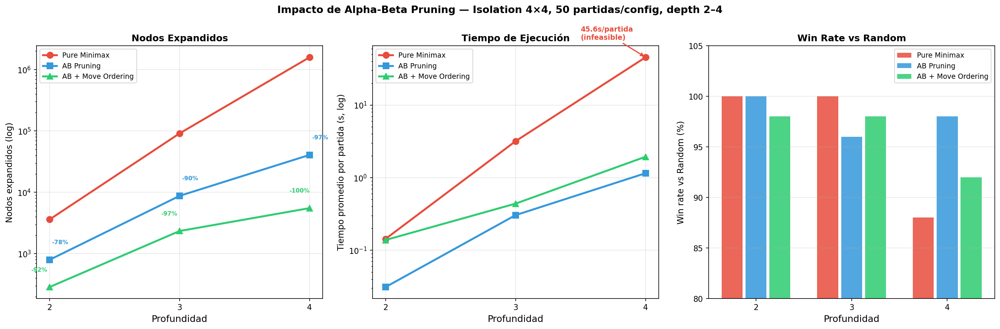
Conclusiones:
h_mobility por acción, en cada nodo) supera el beneficio de la poda
adicional cuando la heurística es tan barata como h_mobility (O(1)). Move Ordering sería más
rentable con heurísticas costosas como h_territory o h_future_mobility.
Se implementó ExpectimaxAgent (expectimax_agent.py), que difiere de Minimax en
los nodos del oponente: en lugar de un nodo Min (oponente óptimo), se usa un nodo de azar
que calcula la esperanza de los valores de los hijos, asumiendo que el oponente elige sus acciones
con distribución uniforme:
Cuándo conviene cada técnica: Minimax es conservador — asume el peor caso (oponente óptimo). Expectimax es más optimista — adecuado cuando el oponente es aleatorio o subóptimo. Para decidir cuál usar en MATE se realizó un experimento riguroso (partidas balanceadas —mitad como P1, mitad como P2—, test binomial; N entre 150 y 300 según el enfrentamiento, ver columna N):
| Enfrentamiento | N | Win rate Minimax | p-valor | Conclusión |
|---|---|---|---|---|
| Minimax d2 vs Expectimax d2 | 300 | 41.7% | 0.004 | Expectimax gana — a poca profundidad el oponente "no se ve venir" |
| Minimax d3 vs Expectimax d3 | 300 | 95.3% | ≈0 | Minimax aplasta — el rival real juega cerca del óptimo |
| Minimax d3 vs Expectimax d4 | 200 | 53.0% | 0.396 | n.s. — un nivel extra de profundidad equipara a Expectimax |
| Minimax d4 vs Expectimax d4 | 150 | 76.7% | ≈0 | A igual profundidad, Minimax vuelve a dominar |
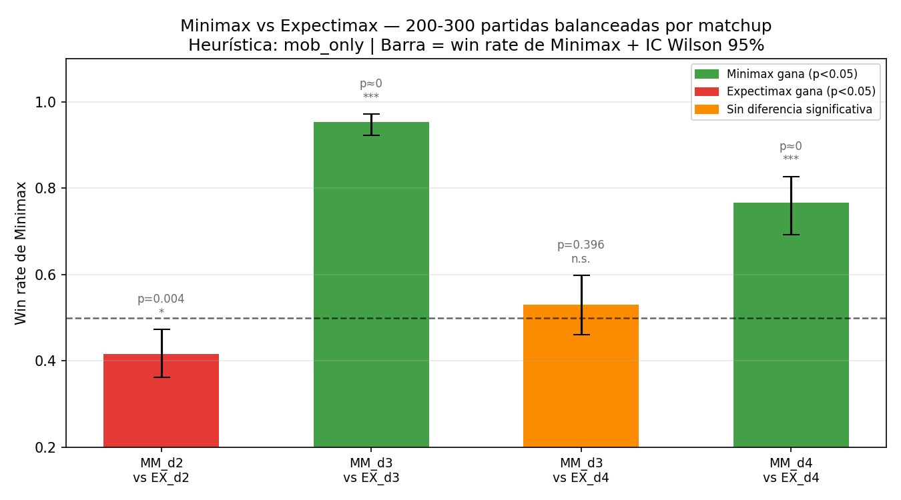
Conclusión: dado que el oponente real es otro agente que busca jugar bien (otro Minimax o
Stratagem), la suposición de Expectimax (oponente uniforme/aleatorio) es incorrecta
en este dominio. La evidencia más contundente: Expectimax (depth=3) pierde el 81% de las
partidas contra Stratagem (gana solo 18.7% de 300), mientras que Minimax gana el 76.7%.
Minimax con Alpha-Beta es la técnica elegida para el agente final. Expectimax solo sería
preferible contra oponentes genuinamente aleatorios o subóptimos.
Se implementaron las siguientes heurísticas primitivas (heuristics.py), todas con la firma
h(board, player) → float, donde valores positivos favorecen a player:
| Heurística | Fórmula | Costo |
|---|---|---|
h_mobility | movimientos propios − movimientos del oponente | O(1) |
h_center_proximity | (dist_oponente − dist_propia) / dist_máx al centro | O(1) |
h_open_cells | (acciones propias − acciones oponente) / total (normalizado, [-1,1]) | O(1) |
h_future_mobility | promedio de movilidad propia tras 1 jugada − ídem oponente | ~20× h_mobility |
h_territory | BFS: celdas vacías alcanzables propias − del oponente | ~1.8× h_mobility |
Nota: h_open_cells usa la misma señal subyacente que h_mobility
(get_possible_actions), solo que normalizada — no aporta información independiente.
Y las siguientes funciones de evaluación compuestas, combinando heurísticas con distintos pesos:
| Función | Fórmula |
|---|---|
eval_mobility_only | h_mobility |
eval_mobility_center | 0.7 · h_mobility + 0.3 · h_center_proximity |
eval_full | 0.6 · h_mobility + 0.2 · h_center_proximity + 0.2 · h_open_cells |
eval_territory | h_territory |
eval_mobility_territory | 0.6 · h_mobility + 0.4 · h_territory |
Para decidir objetivamente cuál heurística usar, se diseñó un round-robin completo entre las 5 funciones de evaluación: C(5,2)=10 pares, 1500 partidas balanceadas por par (750 como P1 + 750 como P2), Minimax-AB, depth=3. Se aplicó un test binomial de dos colas por par (H₀: win_rate = 0.5) con corrección de Bonferroni (α_ajustado = 0.05/10 = 0.005). Con este tamaño de muestra la mínima diferencia detectable post-Bonferroni baja a ~4% (vs ~14% con 100 partidas), lo que permite distinguir diferencias pequeñas entre heurísticas.
| Heurística | Wins / Games | Win Rate | IC Wilson 95% | vs 50% |
|---|---|---|---|---|
| mobility_only | 3064 / 6000 | 51.1% | [0.498, 0.523] | n.s. |
| mobility_center | 3064 / 6000 | 51.1% | [0.498, 0.523] | n.s. |
| full | 3041 / 6000 | 50.7% | [0.494, 0.520] | n.s. |
| territory | 3012 / 6000 | 50.2% | [0.489, 0.515] | n.s. |
| mobility_territory | 2819 / 6000 | 47.0% | [0.457, 0.483] | peor (p<0.001) |
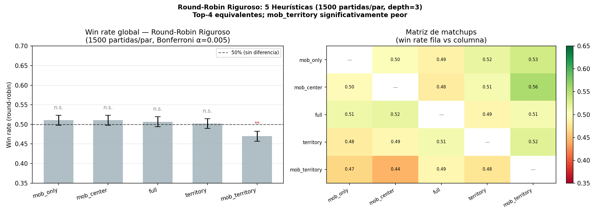
mobility_territory queda por debajo.
Conclusión: con 1500 partidas/par, las cuatro mejores heurísticas
(mobility_only, mobility_center, full, territory) son
estadísticamente equivalentes (todas entre 50.2% y 51.1%, sus IC Wilson se solapan; ningún par
supera α=0.005 post-Bonferroni). La única diferencia significativa que emerge al aumentar la potencia es que
mobility_territory es peor que el resto (47.0%, pierde contra
mobility_center con p≈2×10⁻⁵). Por lo tanto, se elige eval_mobility_only
como heurística final: comparte el mayor win-rate global (51.1%) con mobility_center,
es la más simple (una resta) y la más rápida (O(1)). Aumentar el tamaño de muestra de 100 a 1500 partidas no
reveló ninguna heurística compleja superior — confirmó que la elección simple es correcta.
Resumen del diseño experimental completo. Todos los torneos balancean los roles P1/P2 (ver Sección 4 sobre la ventaja del primer jugador) y se evalúan con test binomial + IC Wilson 95% (corrección de Bonferroni cuando hay comparaciones múltiples):
| Experimento | Objetivo | Metodología | N |
|---|---|---|---|
| Pure vs AB vs AB+MO | Cuantificar impacto de Alpha-Beta | Nodos + tiempo + win% vs Random | 50/config |
| Minimax vs Expectimax | Decidir qué técnica usar | Match balanceado, test binomial | 200-300/matchup |
| Round-robin de heurísticas | Comparar funciones de evaluación | Round-robin balanceado + Bonferroni | 1500/par |
| Sweep depth × heurística | ¿La profundidad compensa la heurística? | vs. baseline mob_only depth=3 | 500/config |
| Escalera de profundidad (d4-d6) | Encontrar el techo útil de profundidad | Enfrentamiento directo balanceado | 60-500 |
| Agente final vs Stratagem | Benchmark externo (agente de cátedra) | Match balanceado | 300 |
| Agente final vs Random | Confirmar dominancia básica | Match balanceado | 200 |
| Mirror match (d5 vs d5) | Cuantificar ventaja de P1 a la profundidad final | Sin balanceo de roles | 100 |
| Depth | Win% vs Random | Nodos promedio/partida |
|---|---|---|
| 2 | 100% | 3.038 |
| 3 | 99% | 23.368 |
| 4 | 100% | 187.758 |
Contra Random, incluso depth=2 ya domina — las diferencias entre profundidades emergen al enfrentar oponentes hábiles, como muestra el siguiente sweep:
| Configuración | Win rate vs. baseline (mob_only d3) | p-valor | Significativo |
|---|---|---|---|
| mobility_only depth=2 | 39.0% | ≈0 | ✓ — depth=2 significativamente peor |
| mobility_center depth=2 | 40.4% | 2×10⁻⁵ | ✓ — peor |
| full depth=2 | 43.4% | 0.003 | ✓ — peor |
| mobility_only depth=3 | 51.0% | 0.655 | n.s. (= baseline) |
| mobility_center depth=3 | 51.4% | 0.531 | n.s. |
| full depth=3 | 50.4% | 0.858 | n.s. |
| mobility_only depth=4 | 61.2% | ≈0 | ✓✓ muy significativo |
| mobility_center depth=4 | 60.2% | 10⁻⁵ | ✓✓ significativo |
| full depth=4 | 56.4% | 0.004 | ✓ significativo |
Cada celda usa 500 partidas balanceadas. El patrón es idéntico para las tres heurísticas: depth=2 pierde, depth=3 empata, depth=4 gana significativamente contra el baseline de depth=3.
Se llevó la búsqueda más allá de depth=4 para encontrar el techo práctico (enfrentamientos directos
balanceados con mobility_only):
| Enfrentamiento | N | Win rate | IC Wilson 95% | p-valor | Conclusión |
|---|---|---|---|---|---|
| depth=4 vs depth=3 | 500 | 61.2% | [0.57, 0.65] | ≈0 | d4 > d3 |
| depth=5 vs depth=4 | 300 | 63.0% | [0.574, 0.683] | 10⁻⁵ | d5 > d4 (significativo) |
| depth=6 vs depth=5 | 60 | 50.0% | [0.377, 0.623] | 1.000 | d6 = d5 (sin ganancia) |
Techo en depth=5. Cada nivel de profundidad hasta 5 mejora significativamente; depth=6 ya no
aporta (50% vs depth=5). Por eso el agente final usa depth=5 — el punto donde el lookahead
adicional deja de traducirse en mejores jugadas. A depth=5 cada jugada tarda ~1.4 s (viable en tiempo real).
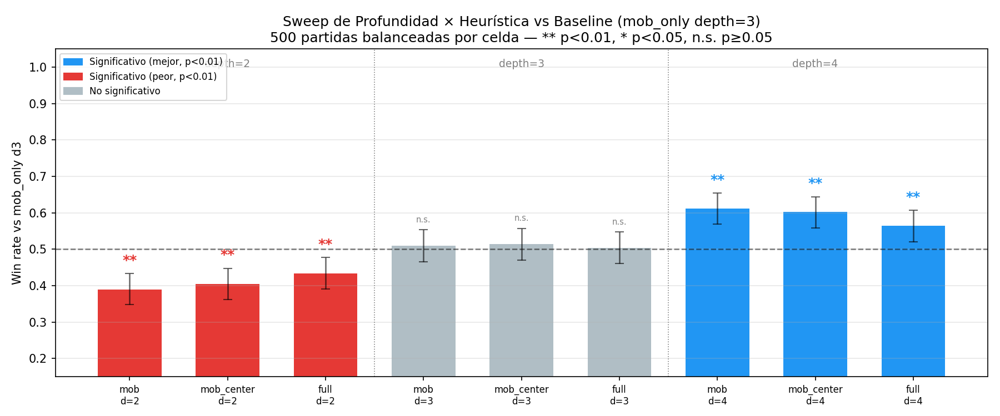 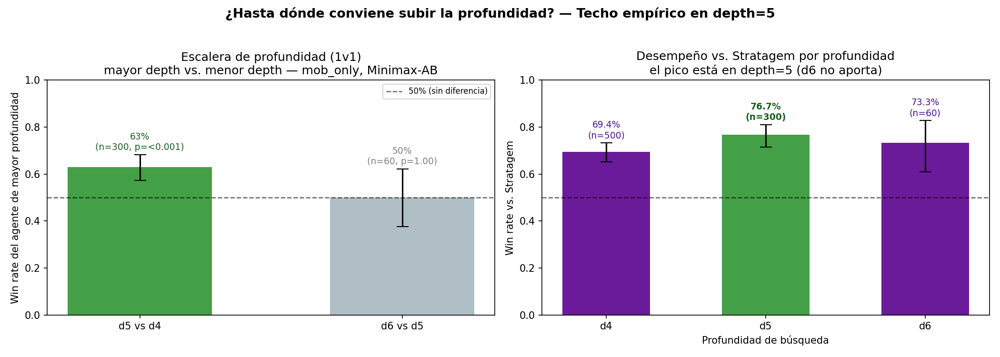
En resumen, la profundidad pesa más que la calidad de la heurística.
Subir de depth=3 a depth=4 mejora significativamente a las tres heurísticas (mobility_only 61.2%, p≈0;
mobility_center 60.2%; full 56.4%, p=0.004), mientras que en el round-robin a profundidad fija ninguna
heurística supera claramente a las demás. Dicho de otro modo, invertir cómputo en más profundidad rinde
mucho más que sofisticar la función de evaluación. full mejora algo menos que
mobility_only a depth=4 (56% vs 61%), consistente con que su mayor complejidad no compensa.
| Experimento | Resultado | p-valor | IC Wilson 95% | Propósito |
|---|---|---|---|---|
| Agente final (d5) vs Stratagem | 230/300 (76.7%) | ≈0 | [71.6%, 81.1%] | Benchmark externo (agente de cátedra) |
| Agente final (d5) vs Random | 181/200 (90.5%) | ≈0 | [85.6%, 93.8%] | Confirmar dominancia básica |
| Mirror match (d5 vs d5) | P1 gana 100/100 (100%) | ≈0 | [96.3%, 100%] | Cuantificar ventaja del primer jugador |
Nota: a depth=4 el agente ganaba 69.4% vs Stratagem; a depth=5 sube a 76.7% — el salto de profundidad se traduce directamente en desempeño contra el oponente de cátedra. La ventaja del primer jugador se vuelve total a depth=5 (P1 gana el 100% del mirror match): con más lookahead, la ventaja estructural del tablero 4×4 se explota por completo.
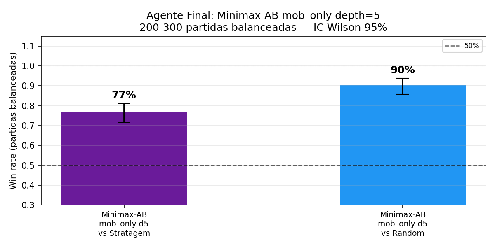
MinimaxAgent, depth=5, eval_mobility_only,
Alpha-Beta) frente a Stratagem y a RandomAgent, con intervalos de confianza.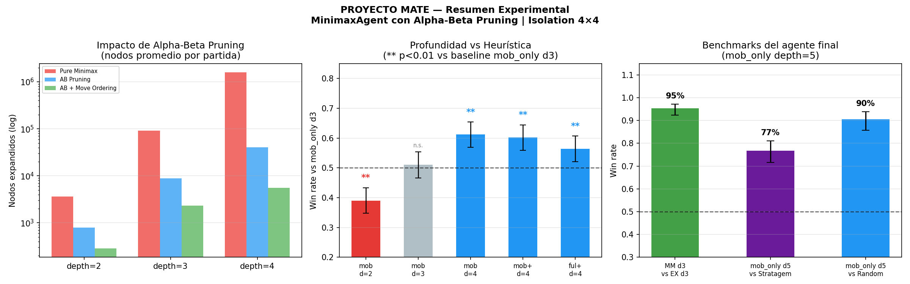
Agente final elegido:
MinimaxAgent(depth=5, heuristic=eval_mobility_only, use_alpha_beta=True, use_move_ordering=False)
mobility_territory resultó peor. Se elige mobility_only por compartir el mayor win-rate (51.1%) y ser la más simple/rápida.Stratagem: la suposición de oponente aleatorio es incorrecta frente a un rival que juega casi óptimo.Stratagem en el 76.7% de 300 partidas balanceadas (p≈0), y a RandomAgent en el 90.5% de 200.Ambos proyectos abordan problemas de decisión secuencial bajo paradigmas opuestos: LOST es un problema de aprendizaje por refuerzo en un ambiente continuo de un solo agente, mientras que MATE es un problema de búsqueda adversarial de suma cero entre dos agentes. La siguiente tabla resume los puntos de comparación más relevantes:
| Aspecto | LOST (Q-Learning / Dyna-Q) | MATE (Minimax / Expectimax) |
|---|---|---|
| Tipo de problema | Aprendizaje por refuerzo (ambiente continuo) | Búsqueda adversarial (juego de suma cero) |
| Técnica principal | Q-Learning tabular + Dyna-Q | Minimax con Alpha-Beta Pruning |
| Desafío central | Recompensa esparsa; meta a ~500 pasos | Factor de ramificación ~96; profundidad limitada |
| Solución al desafío | q_init=1.0 (inicialización optimista) + γ=0.99 | Alpha-Beta Pruning (-97% de nodos a depth=4) |
| Mejor resultado | 94.14 reward, 100% éxito (15k episodios) | 76.7% vs. Stratagem, 90.5% vs. Random (depth=5) |
| Tiempo de entrenamiento/cómputo | QL: ~5 min (15k eps) / Dyna-Q: ~4 min (5k eps) | No aplica — búsqueda en tiempo real (~1.4 s/jugada a depth=5 con AB) |
| Hallazgo no obvio | γ<0.99 hace la meta invisible (0.9⁵⁰⁰ ≈ 10⁻²³) | La profundidad domina sobre la heurística; el techo útil es depth=5 (depth=6 no aporta) |
Las dificultades encontradas durante el desarrollo, así como los hallazgos no triviales del proceso experimental, se detallan en la Sección 4.
Q-Learning con la tabla Q inicializada en 0 no llega a la meta en ninguna configuración probada. Como
r = -0.1·a² es negativo para cualquier acción con fuerza, la primera vez que se visita un par
(s,a) con |a|>0, su valor Q se vuelve negativo. Con ε decayendo, el agente
termina prefiriendo estados aún no visitados (Q=0, "neutro") sobre acciones con fuerza, aprendiendo que
fuerza ≈ 0 minimiza la penalización — un mínimo local del que nunca escapa, porque el reward
+100 de la meta jamás llega a propagarse.
Solución: q_init=1.0 (inicialización optimista). Como 1.0 > cualquier
valor negativo ya observado, el agente se ve "obligado" a seguir explorando cada estado antes de concluir
que es malo, hasta que eventualmente alcanza la meta y el valor +100 comienza a propagarse hacia atrás.
Con γ=0.90, el valor descontado de la recompensa de la meta a ~500 pasos de distancia es
0.9⁵⁰⁰ ≈ 10⁻²³ — numéricamente indistinguible de cero en los TD-updates. Solo con γ≥0.99
(0.99⁵⁰⁰ ≈ 0.0066) la señal de la meta alcanza a propagarse hasta estados lejanos. Este es el
hiperparámetro más sensible del proyecto: con γ∈{0.90, 0.95}, la tasa de éxito es 0% sin
importar cuántos episodios se entrenen.
Al validar la robustez con 5 semillas (random.seed + np.random.seed +
seed del ambiente), Dyna-Q con q_init=0 resultó poco confiable: solo 2 de 5 semillas
llegaron al 100% de éxito (59% de éxito medio), y aumentar a 10.000 episodios lo empeoró
(1 de 5 semillas). La causa raíz: en este ambiente de recompensa esparsa, Dyna-Q necesita encontrar la meta
al menos una vez mediante exploración aleatoria para que la planificación tenga algo que
propagar; con un RNG desfavorable, esa primera llegada nunca ocurre y el modelo de planificación queda
"vacío". Este hallazgo corrigió nuestra hipótesis inicial (basada en una única corrida
afortunada) de que "Dyna-Q no necesitaba inicialización optimista".
Solución verificada: con q_init=1.0, Dyna-Q se vuelve robusto — 3 de 5
semillas al 100% y las 5 usables (≥78% de éxito). El modelo dynaq_FINAL.pkl entregado se
re-entrenó con q_init=1.0 y semilla fija (=0), logrando 91.9 reward / 100% de éxito de forma
totalmente reproducible. Datos completos en models/lost/dyna_multiseed_xl.csv.
Como se muestra en la Sección 1.5, n_planning=20 produce peor desempeño (18% éxito) que n_planning=10 (66% éxito) bajo el mismo presupuesto de episodios. Con un modelo todavía poco denso, demasiada planificación refuerza prematuramente valores Q basados en pocas transiciones observadas, generando una política subóptima de la que es difícil escapar luego. n=10 resultó ser el punto óptimo para 3.000-5.000 episodios.
| Algoritmo | q_init | Episodios | Semillas al 100% | Éxito medio | Reward cross-seed | Veredicto |
|---|---|---|---|---|---|---|
| Q-Learning | 1.0 | 15.000 | 3 / 3 | 100% | 93.02 ± 0.97 | ✅ robusto |
| Dyna-Q | 0.0 | 5.000 | 2 / 5 | 59% | inestable | ❌ no confiable |
| Dyna-Q | 1.0 | 5.000 | 3 / 5 (5/5 usables) | 95% | 81.1 ± 13.0 | ✅ robusto |
| Dyna-Q | 0.0 | 10.000 | 1 / 5 | 20% | peor aún | ❌ |
Conclusión: la clave de la reproducibilidad en este ambiente es la inicialización
optimista (q_init=1.0), no el número de episodios: con q_init=0 ni siquiera 10k episodios garantizan
converger, mientras que con q_init=1.0 tanto Q-Learning (15k eps, 3/3 semillas) como Dyna-Q (5k eps, 5/5
usables) son robustos. Ambos modelos entregados (qlearning_FINAL.pkl y
dynaq_FINAL.pkl) se entrenaron con q_init=1.0 y semilla fija, por lo que son
totalmente reproducibles. La limitación honesta a declarar es que Dyna-Q con q_init=0 es
inherentemente sensible a la semilla en ambientes de recompensa esparsa. Datos en
models/lost/dyna_multiseed_xl.csv.
Move Ordering reduce un 99.7% los nodos expandidos respecto a Minimax puro (vs. 97% de AB solo a depth=4),
pero resulta más lento en tiempo de pared (1.94 s vs. 1.15 s/partida). El overhead de
calcular la heurística para ordenar las acciones en cada nodo supera el beneficio de la poda adicional
cuando la heurística es O(1) (como h_mobility). Conclusión: Move Ordering solo se justifica con
heurísticas costosas (h_territory, h_future_mobility); con la heurística elegida
(mobility_only), Alpha-Beta solo es la mejor configuración.
En el mirror match, P1 gana el 73% a depth=4 y el 100% a depth=5 (p≈0). La ventaja crece con la profundidad: con más lookahead ambos agentes juegan casi perfecto y la ventaja estructural del primer movedor en un tablero 4×4 (más "territorio virgen") se vuelve decisiva. No es un problema de los agentes, sino una propiedad del entorno. Se mitiga balanceando todos los torneos (50% de las partidas con cada agente como P1), de modo que las comparaciones entre heurísticas/profundidades no estén sesgadas por este efecto.
Con 100 partidas/par las 5 heurísticas parecían todas equivalentes. Al escalar a 1500 partidas/par
(mínima diferencia detectable ~4%) el cuadro se afinó: las cuatro mejores siguen siendo equivalentes
(50.2%–51.1%), y solo emergió que mobility_territory es peor que el resto. Esto fue
inesperado — la hipótesis inicial era que las heurísticas compuestas (más señales) serían superiores; resultaron
iguales o peores. Con Alpha-Beta a mayor profundidad, el lookahead compensa la calidad de la evaluación de las
hojas, haciendo que la elección de heurística sea secundaria frente a la profundidad de búsqueda.
Con muestras chicas (100 partidas) parecía que depth=5 no mejoraba claramente sobre depth=4. Al escalar
(300 partidas balanceadas) el resultado se volvió nítido: mobility_only depth=5 vence a
depth=4 el 63% (p≈10⁻⁵) y sube contra Stratagem de 69.4% (d4) a 76.7%
(d5). En cambio, depth=6 no mejora sobre depth=5 (50%, p=1.0). Por eso el agente final se
actualizó a depth=5 — el punto donde el lookahead adicional deja de rendir. A ~1.4 s/jugada
sigue siendo jugable en tiempo real. Datos en models/mate/rigorous_depth56.csv. El cambio de
conclusión apareció recién al aumentar el tamaño de muestra: con 100 partidas la diferencia d4/d5 no se
distinguía del ruido.
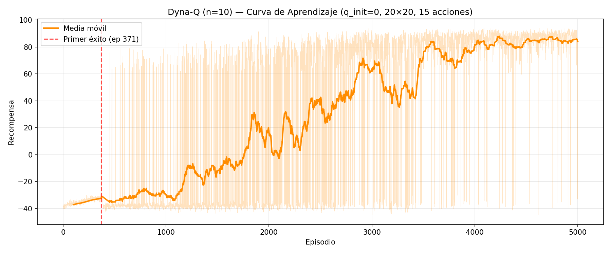
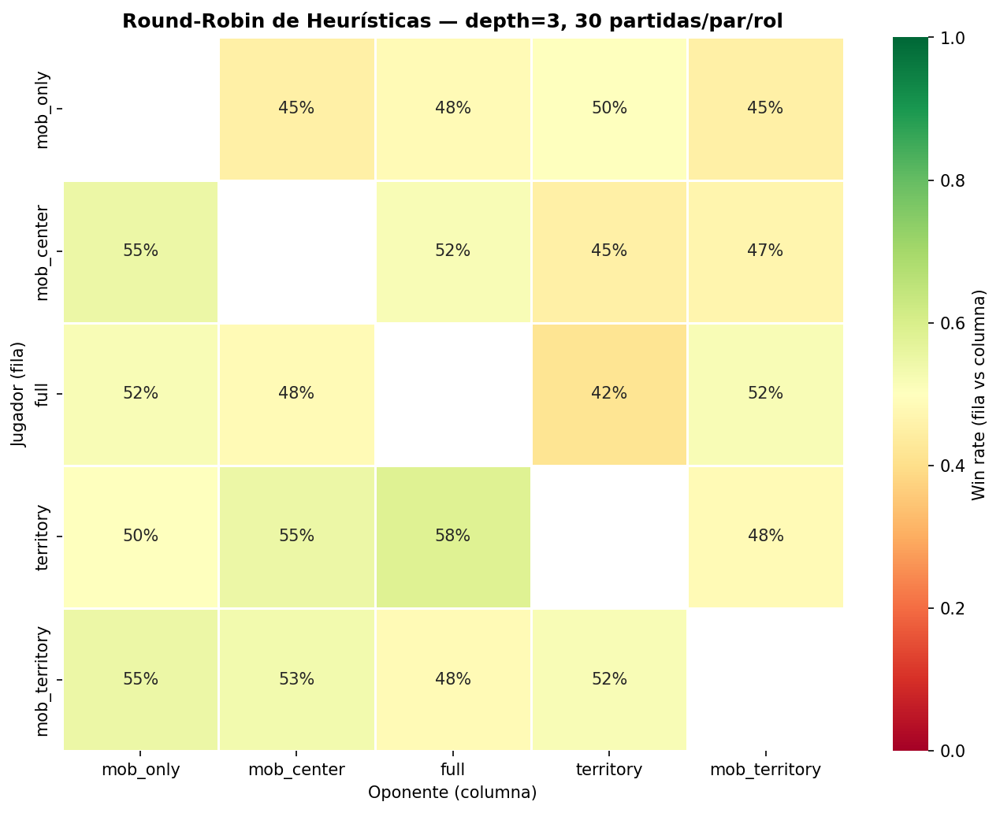
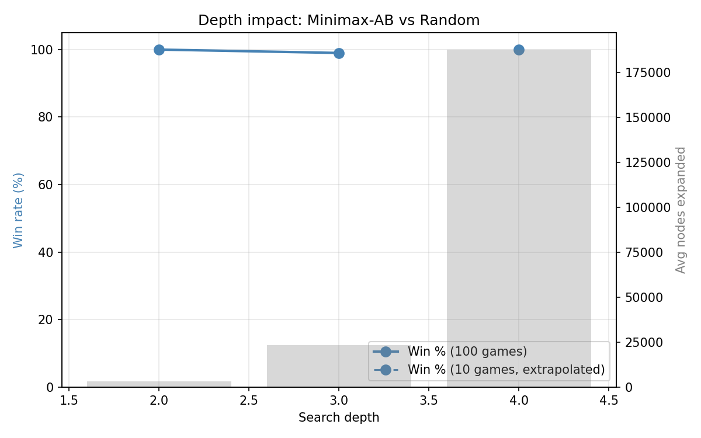
def obs_to_state(self, obs: np.ndarray) -> tuple[int, int]:
"""Convierte una observación continua en un índice de estado discreto."""
x, vel = obs
x_bin = int(np.digitize(x, self.pos_bins))
vel_bin = int(np.digitize(vel, self.vel_bins))
return x_bin, vel_bin
def action_index_to_continuous(self, idx: int) -> np.ndarray:
"""Convierte un índice de acción discreta en la acción continua del ambiente."""
return np.array([self.actions[idx]])
def _update(self, obs, action_idx, reward, next_obs, done):
state = self.disc.obs_to_state(obs)
next_state = self.disc.obs_to_state(next_obs)
max_next_q = 0.0 if done else float(np.max(self.Q[next_state]))
target = reward + self.gamma * max_next_q
self.Q[state][action_idx] += self.alpha * (target - self.Q[state][action_idx])
def _dyna_step(self, obs, action_idx, reward, next_obs, done):
state = self.disc.obs_to_state(obs)
next_state = self.disc.obs_to_state(next_obs)
# 1. Actualizacion Q con experiencia real
self._q_update(state, action_idx, reward, next_state, done)
# 2. Actualizar modelo
self.model[(state, action_idx)] = (reward, next_state, done)
if (state, action_idx) not in self._visited_set:
self._visited_set.add((state, action_idx))
self._visited.append((state, action_idx))
# 3. n pasos de planificacion simulada
for _ in range(self.n_planning):
if not self._visited:
break
s, a = random.choice(self._visited)
r_sim, s_next_sim, done_sim = self.model[(s, a)]
self._q_update(s, a, r_sim, s_next_sim, done_sim)
def _max_value(self, board, depth, alpha, beta):
self._nodes_expanded += 1
is_end, winner = board.is_end(self.player)
if is_end:
return INF if winner == self.player else -INF
if depth >= self.max_depth:
return self.heuristic(board, self.player)
value = -INF
for action in self._ordered_actions(board, self.player, maximize=True):
child = board.clone()
child.play(action, self.player)
value = max(value, self._min_value(child, depth + 1, alpha, beta))
if value >= beta:
return value # poda beta
alpha = max(alpha, value)
return value
El código completo (notebooks, agentes, heurísticas, scripts de experimentación, modelos .pkl y
figuras) se encuentra en el repositorio entregado junto con este informe. Para más detalle sobre cómo
ejecutar cada experimento, ver README.md en la raíz del proyecto.